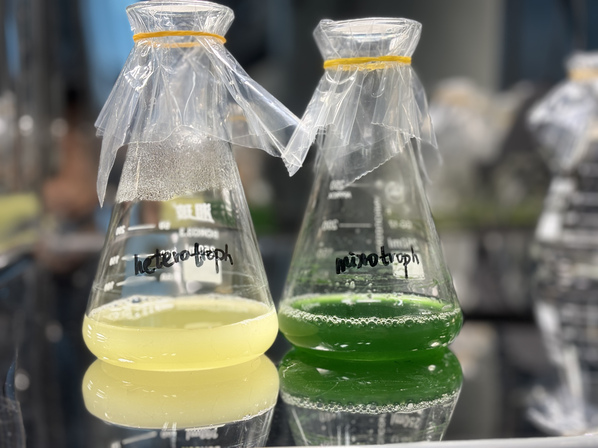
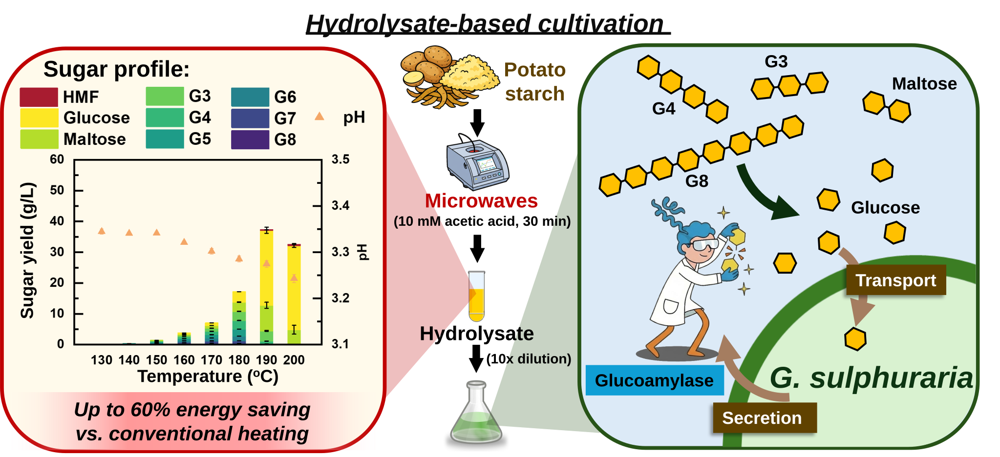

READ STUDY 01
Towards sustainable microalgal farming: Galdieria sulphuraria cultivation on readily available short-chain sugars
Zhuo Li, Qiaozhi Zhang, Iris K.M. Yu
Chemical Engineering Journal 528 (2026), 172420
RESEARCH STORY · 01
01 / THE STARTING POINT
Food waste hydrolysates are acidic. Galdieria sulphuraria thrives at low pH, making it a promising match for this feed without an extra neutralization step.

The first questions: How well does G. sulphuraria grow on hydrolysates, and what oligosaccharide chain lengths can it utilize?
02 / STUDY 01
Published · 2026
Microwave-assisted starch hydrolysis produced oligosaccharide-rich hydrolysates, dominated by chains containing eight or more glucose units. Despite their very low free glucose levels (<0.05 g/L), these hydrolysates supported Galdieria sulphuraria biomass development comparable to a control containing 2 g/L glucose.
The results suggest that oligosaccharides act as a glucose reservoir. Omics evidence points to the possible secretion of GH15 glucoamylase, which helps break down oligosaccharides outside the cells and release glucose for metabolism. Microwave-assisted hydrolysis also saved up to approximately 60% of the energy used by conventional heating.
READ STUDY 01
Zhuo Li, Qiaozhi Zhang, Iris K.M. Yu
Chemical Engineering Journal 528 (2026), 172420
03 / RELATED FINDING
In our cultivation tests, some hydrolysates did not support Galdieria sulphuraria growth. After ruling out HMF as the explanation, we identified formic acid as a possible cause.
Under acidic conditions, undissociated formic acid can passively diffuse into cells. In the near-neutral cytoplasm, it releases H+, causing intracellular acidification that can lead to cell death. This mechanism and the cultivation conditions governing formic acid toxicity have already been investigated in an independent study.
That study also showed that GS can utilize formic acid under controlled continuous feeding, highlighting the importance of cultivation conditions.